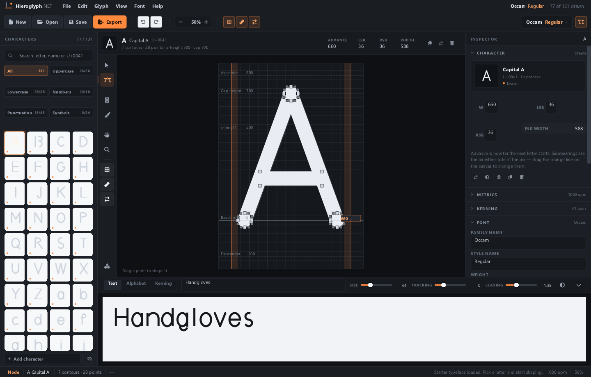
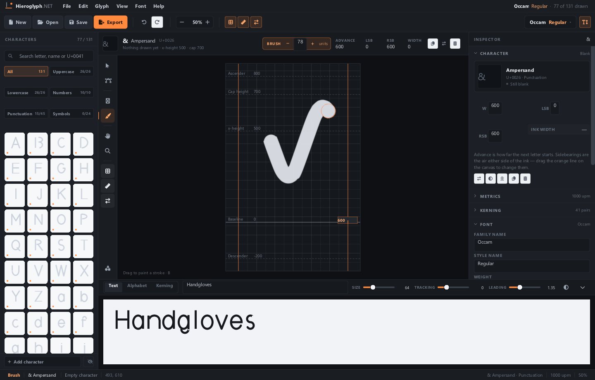
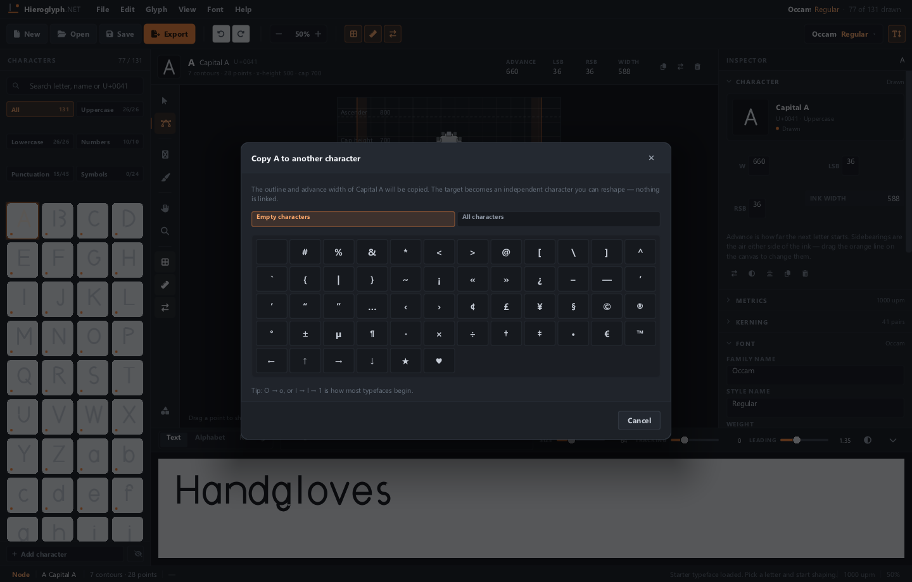

Drawing a glyph
One character at a time. The canvas is an em square with the guides a typeface needs, and two ways to get ink into it.
The canvas and its guides
Every glyph is drawn in font units, with the baseline at 0 and the em square 1000 units tall by default. The pale panel is the glyph cell; the orange verticals are the origin and the advance width.

- Baseline — the line every letter sits on.
- x-height — the top of flat lowercase letters such as n and o.
- Cap height — the top of flat capitals.
- Ascender and descender — the line box used by text layout.
- Grid — a 50-unit design grid, dimmed automatically as you zoom out.
The grid, metric guides and sidebearing guides are toggled from the toolbar or the tool rail. Zoom with the wheel or Ctrl+=/-; fit the glyph with Ctrl+0; pan with a middle-drag or the hand tool.
The brush
Press B and drag. That is the whole workflow. The stroke follows the pointer, and on release it becomes one closed, smooth outline you can edit like any other shape.

- Width — set the brush size in font units in the glyph bar, or use the − and + buttons. The default is 78 units, about the stem of a regular weight.
- A single click makes a round dot.
- Several strokes accumulate on the same character; overlapping strokes merge visually.
- Smoothing — the pointer path is simplified and smoothed before it is offset, so the result is a clean outline with tens of points rather than hundreds.
- Undo — each stroke is one undo step.
The pen
The pen builds a contour point by point and is the tool for deliberate curves.
- Press P.
- Click to place a corner point.
- Click and drag to place a smooth point and pull its two handles out together.
- Keep clicking to extend the contour.
- Click the first point to close the contour, or press Enter or Escape to leave it open.
An open contour is shown and filled as if closed, and is reported as a warning when you export. A dashed line follows the pointer from the last point so you can see where the next segment will go.
Editing points
Press A for the node tool.
| You want to… | Do this |
|---|---|
| Select a point | Click it. Shift-click adds more points in the same contour. |
| Move points | Drag any selected point, or nudge with the arrow keys (10 units, or 1 with Shift). |
| Move in one direction | Hold Shift while dragging. |
| Shape a curve | Drag a round handle. Smooth points mirror the opposite handle automatically. |
| Break a smooth point | Hold Alt while dragging a handle; the two handles move independently. |
| Select many points | Drag a marquee on empty canvas. |
| Delete points | Select them and press Delete. |
| Make a point smooth or sharp | Use the point controls in the inspector, or double the handles by hand. |
With the selection tool (V), dragging moves the whole character. Clicking a point switches you to node editing, which is what most people mean when they click a corner.
Advance width and sidebearings
Spacing matters as much as shape. Three numbers describe it:
- Advance width — how far the pen moves after this character. Editable in the inspector or by dragging the orange line at the baseline.
- Left sidebearing — the gap from the origin to the leftmost ink.
- Right sidebearing — the gap from the rightmost ink to the advance.
The canvas shades the two sidebearing zones so uneven spacing is visible at a glance. Editing the left sidebearing slides the outline; editing the right one changes the advance.
The character browser
The left column lists every character in the font with a live miniature and an orange dot once it has an outline.
- Search by character, name or code point — try
A,Ampersandor0026. - Filter by Uppercase, Lowercase, Numbers, Punctuation, Symbols or Custom. Each chip shows its completion count.
- Only unfinished — the eye button hides everything already drawn.
- Add character — type any character or code point (é, €, U+2192) to add it to the font.
- Step through with [ and ], or PageUp and PageDown.
Templates and duplication
Most typefaces begin by copying a related shape. Press Ctrl+D, or use Edit → Duplicate Character…, then pick a target character. The outline and advance width are copied and become completely independent.

Good starting pairs: O → o, I → l → 1, H → n, E → F. A blank character also offers starter shapes — an ellipse, a rectangle, a stem — and the brush.
Font-wide metrics
The Metrics panel on the right controls the guides shared by every character in the style.
| Metric | What it does |
|---|---|
| Units per em | The design grid. Changing it rescales every outline, advance and kerning value, so the drawing stays proportionally identical. |
| Ascender / descender | The line box used by text layout and the font's typographic metrics. |
| Cap height / x-height | Where the guide lines are drawn, and what is written to the font's metadata. |
| Line gap | Extra space between lines. |
“Reset guides” returns to the 1000-unit defaults without touching any outline.